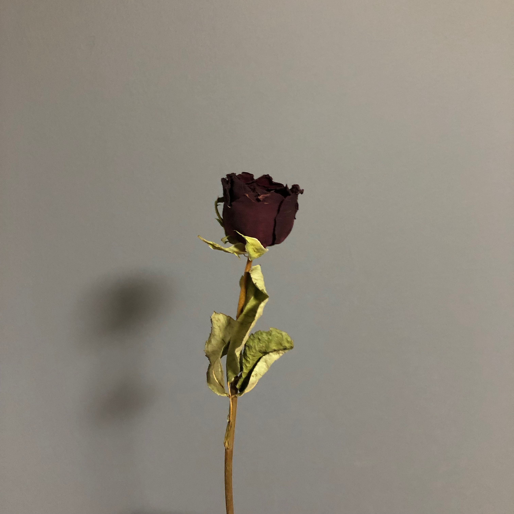
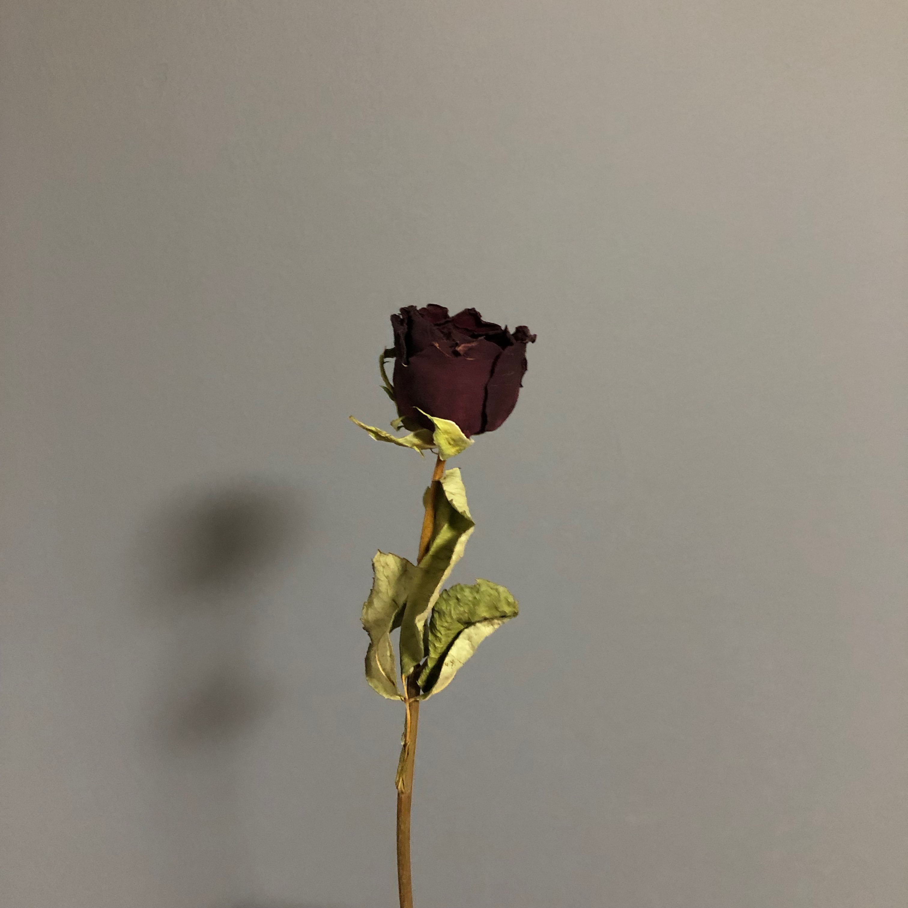

ソフトウェアネットワーク演習
Session:1
課題：Photoshopでトップページ画像を作成する
 私は、暗めの大人っぽい画像を加工したかったから、明るさを暗くして、彩度を下げた。
私は、暗めの大人っぽい画像を加工したかったから、明るさを暗くして、彩度を下げた。
他にも何かを付け加えたりフィルターをかけてみようか迷ったが、やはりシンプルにしたかったからやめることにした。
使った画像が元々いい感じだったから、この素材をうまく活かせるような加工ができるように努力した。

私は、暗めの大人っぽい画像を加工したかったから、明るさを暗くして、彩度を下げた。
他にも何かを付け加えたりフィルターをかけてみようか迷ったが、やはりシンプルにしたかったからやめることにした。
使った画像が元々いい感じだったから、この素材をうまく活かせるような加工ができるように努力した。
